Arcane Library
Arcane Library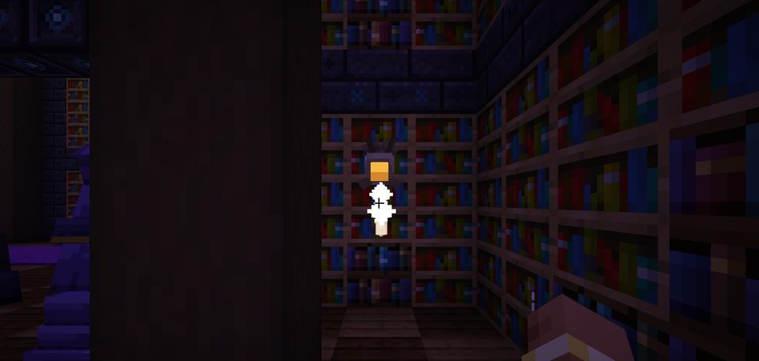
Lumen Moth
Harmless light4 variants
A drifting mote of lamp-light. It will not hurt you; the variants are the point.
- Common: sheds Lumen Dust
- Ember: lights candles
- Pale: gives Night Vision
- Void: brings Darkness
Ten creatures, each with its own model and three or four variants that fight differently. The Restricted Section rolls the harder ones.
Lumen Moth · Silent Librarian · Ink Golem · Vault Ward · Inkling · Page Wraith · Tome Mimic · Bookwyrm · Quill Stalker · Bookend Gargoyle · The Archivist

A drifting mote of lamp-light. It will not hurt you; the variants are the point.
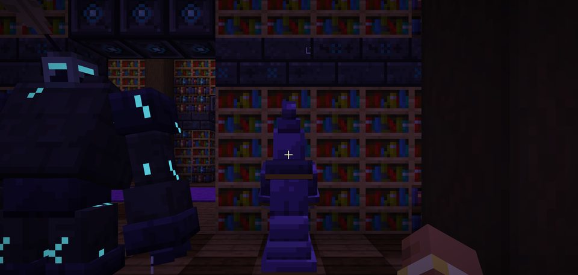
Shh. Neutral until you take a tome from a chest or shelf nearby, then it never forgets.
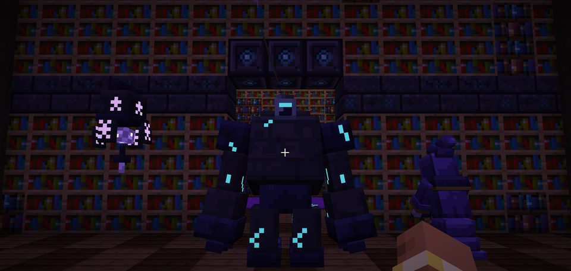
Slow, heavy and stained. Found in scriptoriums.
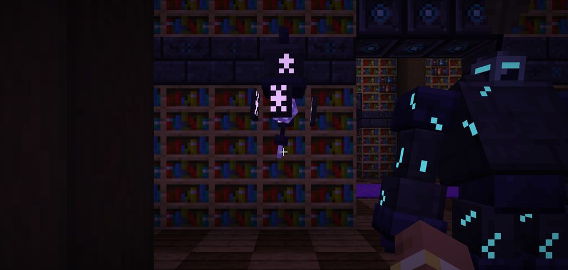
It does not chase you. It guards.
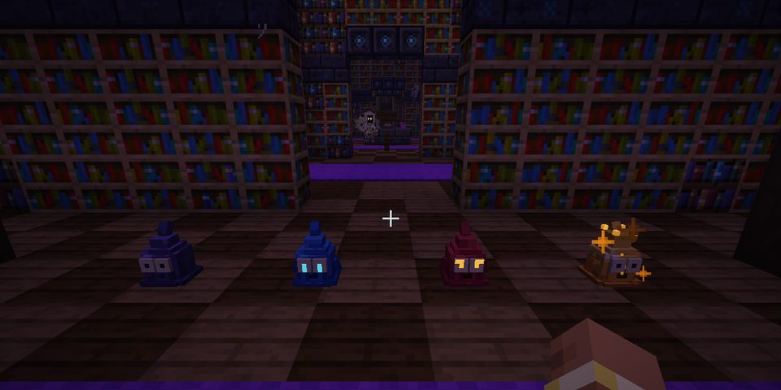
Ink given a grudge.
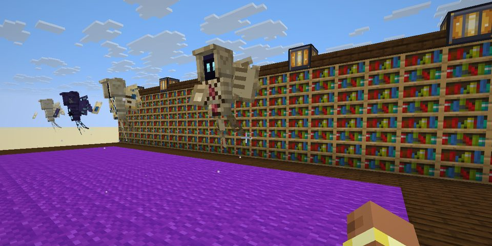
A sheet of loose pages that circles and dives.
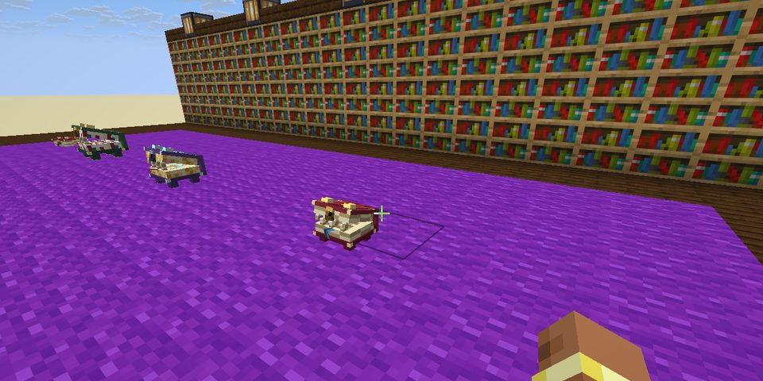
Looks like a book on the floor until you come close.
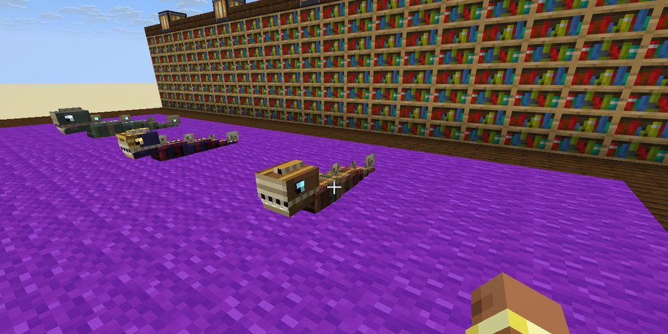
It tunnels through shelving and bursts out of another; it rattles first.
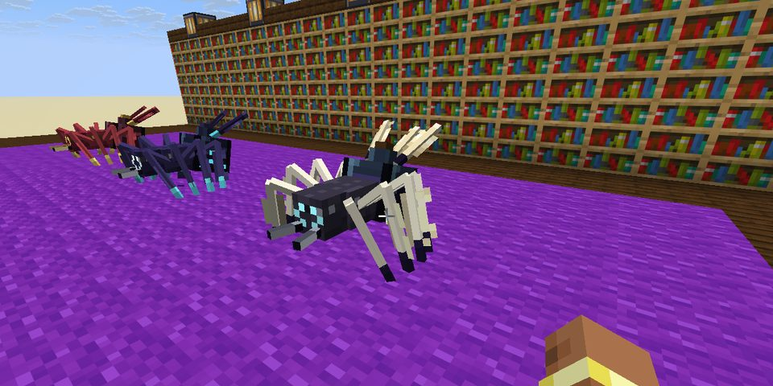
Eight legs, one long quill.
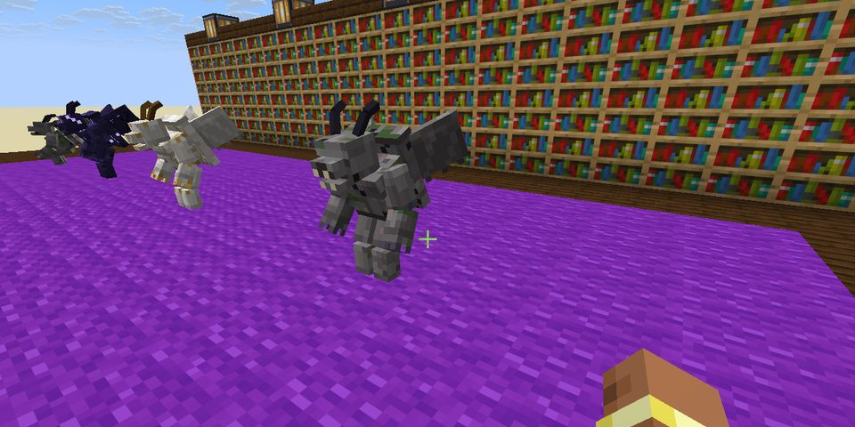
Perched on the ends of shelves, perfectly still.
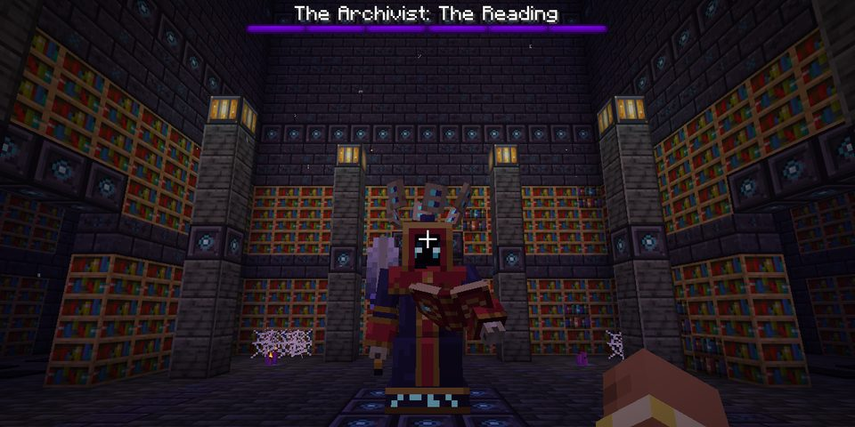
The Library's guardian waits in the sanctums of the Restricted Section. Every attack is telegraphed and counterable.
Drops: Mastered tomes, exclusive tomes, a pile of Lumen Dust, the Archivist's Seal and the Archivist's Bookmark (sneak-use to mark a spot, hold use to return there; 60-second cooldown, same dimension).